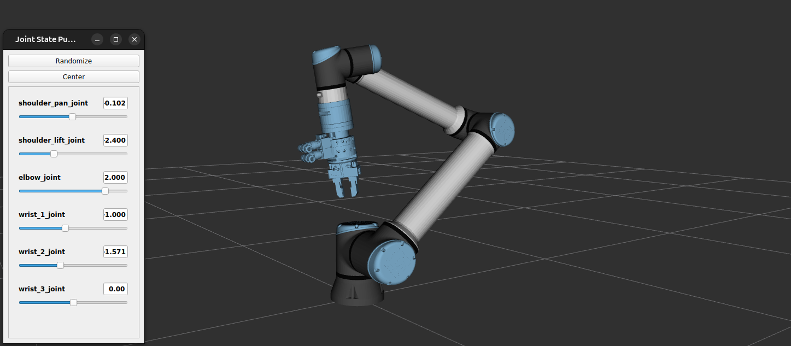
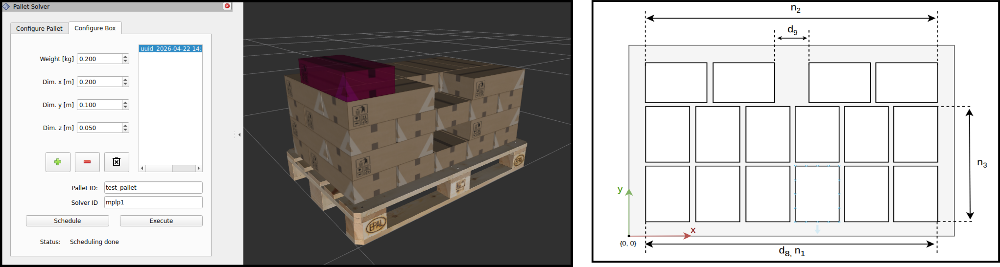
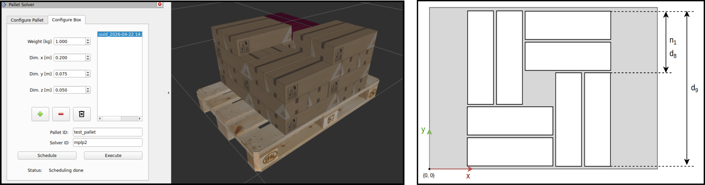

Reusable results
UR + tool integration
A reusable set of ROS2 packages that provide standard configurations for integration of a UR robot model with a custom tool.
Target users: developer robotics integrator non-robot expert
Tech stack: ROS2 ROS2 launch urdf MoveIt
Motivation
Setting up a robot configuration for MoveIt tends to be a challenging procedure, especially when additional assets – like end-of-arm tooling for instance – need to be added to the kinematic chain. Using the MoveIt setup assistant tool, users can create their configuration, but the resulting configuration is ambiguous and scales poorly to very similar configurations that shouldn’t require a reiteration of the entire configuration procedure. The flexibility is limited unless users edit the generated files afterwards, which requires users to have a decent understanding on urdf and how to navigate the generated packages.
This Reusable Result provides users a non-robotics expert user well-reasoned configuration that allows to easily set up a UR robot with a custom end-effector tool.
Summary
The UR tool integration repository provides standard configurations for bringing up any robot from the Universal Robots ecosystem with a custom tool attached, for use within ROS2. It extends the existing robot models available from the UR driver for ROS2, and abstracts the robot configuration for the users to some .yaml files. The separate packages within this project are layered intentionally such that users can launch a configuration for their robot-with-tool setup, that suits their use case. All configurations can easily be validated using either a simulated or a physical robot. The README in the Github repository can be considered as a tutorial that walks the user through the setup of the possible configurations, starting from the tool configuration itself, and ending at a fully functional configuration for collision-free trajectory planning and tracking with MoveIt.
{kind=link}

Figure 2 : Integrated model of a UR robot and a custom tool
The palletizing framework
The main result developed and validated in the 2024-1023-CTO_action_palletizing_solution was the palletizing framework: a ROS2-integrated framework for accommodating pallet solver plugins. The palletizing framework itself comes with a library of MPLP solvers: these address the Manufacturer’s Pallet Loading Problem, where all boxes have the same size. These solvers can optimally stack the pallet following a certain pattern. Currently, two plugins are integrated as examples: MPLP1 and MPLP2.
{kind=link}

Figure 3 : Palletizing example using the integrated pallet solver MPLP1. Left: user interface and pallet visualisation in RVIZ. Right: stacking pattern applied by the pallet solver plugin.
{kind=link}

Figure 4 : Palletizing example using the integrated pallet solver MPLP2. Left: user interface and pallet visualisation in RVIZ. Right: stacking pattern applied by the pallet solver plugin.
The Ceros pallet solver, developed in the scope of the CTO action addresses the Distributor’s Pallet Loading Problem (DPLP), where boxes have different sizes yet need to be optimally stacked. The solver algorithm was integrated as a pallet solver plugin for the palletizing framework as well, see the demonstrator on mixed palletizing.
The implementation of the palletizing framework, built for accommodating pallet solver plugins. Includes the RVIZ plugins for pallet visualisation and the user interface to use the solvers. Includes an example library that implements two mplp solvers.
Target users: developer robotics integrator
Tech stack: C++ ROS2